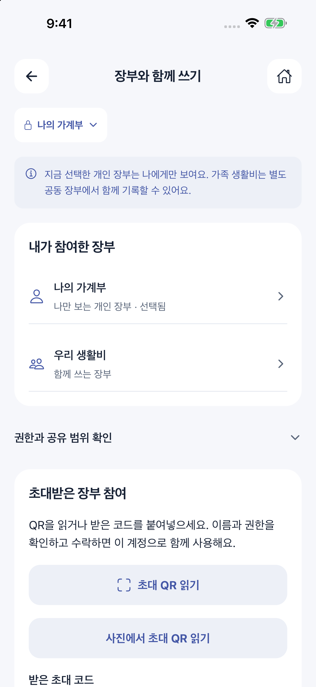
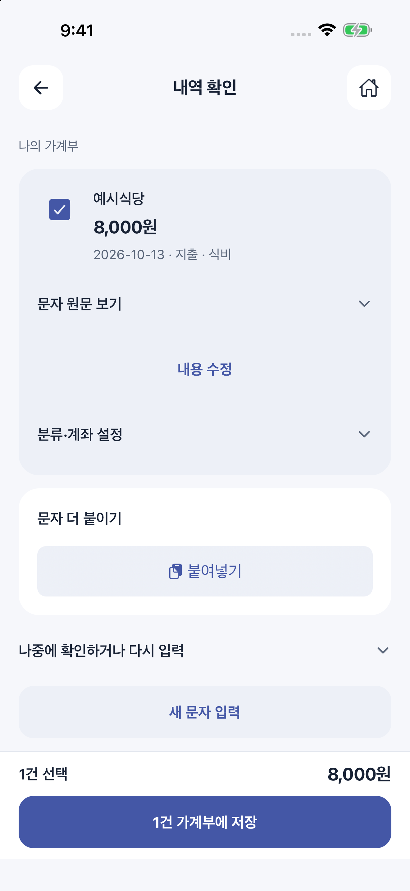
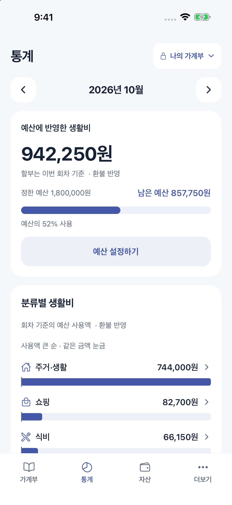
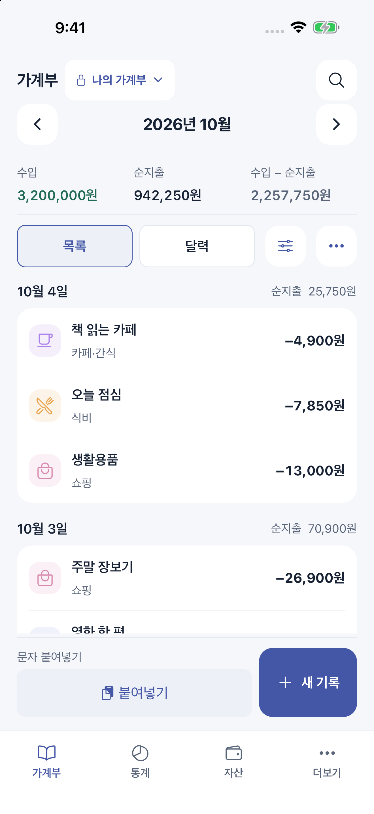

iOS · Android 출시 준비 중
우리 생활비,
같이 보면
더 쉬워져요.
내 기록은 나답게, 생활비는 함께.
혼자 쓴 돈부터 둘이 사는 일상까지 정리해요.
일반 다운로드는 아직 열리지 않았어요. 체험 가능 여부는 문의로 안내해 드려요.
우리 것

함께 쓴다고, 모든 걸 보여줄 필요는 없으니까.
같이 보는 생활비와
나만의 기록 사이, 좋은 거리.
공동 장부에는 우리의 생활비를, 개인 장부에는 나의 소비를.
기록하기 전에, 누구와 보는 장부인지 먼저 확인해요.
잘씀을 더 가까이
매일 쓰는 네 가지 장면
내 장부는 따로.
우리 생활비는 같이.
개인 장부와 공동 장부를 나누고, 초대한 구성원과 생활비를 기록해요. 함께 보는 범위와 편집·조회 권한도 확인할 수 있어요.
한국어·영어 지원 · 원화 기준 · 예시 자료
붙여넣고,
확인한 뒤 저장.
결제 문자를 복사하거나 공유하면 날짜·금액·분류를 검토할 수 있어요. 여러 내역도 확인하며 이어서 저장해요. 문자함을 자동으로 읽지는 않아요.
한국어·영어 지원 · 원화 기준 · 예시 자료

달력보다
내 월급날에 맞게.
매달 생활비가 시작되는 날짜를 정하고, 분류별 예산과 남은 금액을 확인해요. 월말이 아니어도 나에게 맞는 월간 예산을 볼 수 있어요.
한국어·영어 지원 · 원화 기준 · 예시 자료

오늘 쓴 돈부터
이번 달 흐름까지.
날짜별 지출을 확인하고 통계와 장부를 오가며 기록을 살펴봐요. 기록한 내역은 수정하고, 필요한 조건으로 보고서를 확인할 수 있어요.
한국어·영어 지원 · 원화 기준 · 예시 자료

첫 만남 / 00:30
기록은 가볍게.
생활은 더 선명하게.
문자를 붙여넣고, 함께 기록하고, 남은 예산을 확인하는 30초. 소리 없이도 볼 수 있어요.
- 00:05복사한 문자 검토하기
- 00:13내 장부와 공동 장부
- 00:18남은 예산 살펴보기
우리 생활비를 함께 보는
가계부를 만들고 있어요.
실제 화면, 30초 영상, 앞으로의 준비 →당신의 일상을 듣고 싶어요
어떤 생활비 고민을
함께 풀어볼까요?
사용하는 기기와 체험하고 싶은 기능을 알려주세요.
현재 가능한 체험 방법을 이메일로 안내해 드려요.
한국어·영어 화면과 원화 기준으로 제공을 준비하고 있어요.
출시 국가·설치 가격·이용권 조건은 정식 안내에서 확인할 수 있어요.